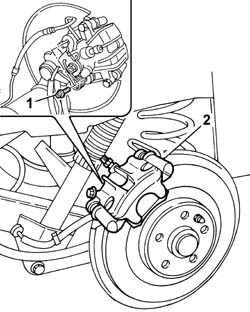
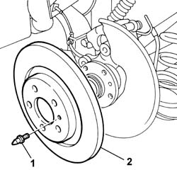
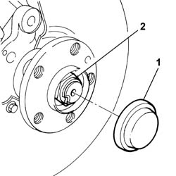
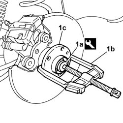
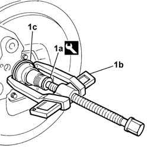
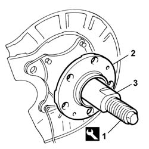

4450D10 HUB OF ONE REAR WHEEL, L/H OR R/H - R+R WITH WHEEL REMOVED
- Path
- Procedures > 44 SUSPENSION AND WHEELS > 4450 HUBS AND WHEELS > 4450D REAR WHEEL HUBS > 4450D10 HUB OF ONE REAR WHEEL, L/H OR R/H - R+R WITH WHEEL REMOVED
- Kind
- repair procedure (removal / refitting; the operation number is the code)
- Applies to
- all engines; all production periods
- Interactive page
- https://sloeber94.github.io/elrnDB-fUlss/en/#/179007417
Applies to: all engines; all production periods
 Removing
Removing
 Refitting
Refitting1. Undo the retaining bolts.
2. Place the brake caliper aside.
- Secure the brake caliper to the vehicle appropriately.

Applies to: all engines; all production periods
1. Undo the retaining bolt.
2. Remove the brake disc.

Applies to: all engines; all production periods
1. Remove the hub nut cover using a suitable tool.
2. Remove the chamfering and undo the nut fixing the wheel hub/bearing to the axle.

Applies to: all engines; all production periods
1. Using tool (1a) and a suitable USAG 454N/1 extractor or similar tool (1b), remove the wheel hub/bearing (1c).
 | Description | Code | Function |
|---|---|---|---|
1a | Mounting | 1.845.028.000 | Wheel hub/bearing extraction |

Applies to: all engines; all production periods
1. Using tool (1a) and a suitable USAG 454N/1 extractor or similar tool (1b), remove the bearing chamber (1c).
| Description | Code | Function |
|---|---|---|---|
1a | Mounting | 1.845.028.000 | Wheel hub bearing chamber extraction |

Applies to: all engines; all production periods
Refitting
Removing- Clean the stub axle before refitting.
1. Tighten the tool hose to the stub axle.
| Description | Code | Function |
|---|---|---|---|
1 | Fitting tool | 1.870.879.000 | Fitting rear hub bearing |
2. Position the new wheel hub/bearing assembly on the hose.
3. Tighten the tool buth until it is in contact with the wheel hub/bearing.
- Remove the tool.

Applies to: all engines; all production periods
- Tighten a new nut securing the wheel hub/bearing to the axle to the recommended torque.
 | Value - daNm | Fastening | Component | Ø |
|---|---|---|---|---|
. | 38.0 | Nut | REAR WHEEL HUB COMPLETE WITH BEARING | - |
- Stake the nut fixing the wheel hub/bearing to the axle using a suitable tool.
- Position the brake disc and tighten the fixing bolt to the recommended torque.
| Value - daNm | Fastening | Component | Ø |
|---|---|---|---|---|
. | 3.5 | Bolt | REAR BRAKE CALIPERS COMPLETE | - |
- Position a new hub nut cover.
- Position the brake caliper and tighten the fixing bolts to the recommended torque.